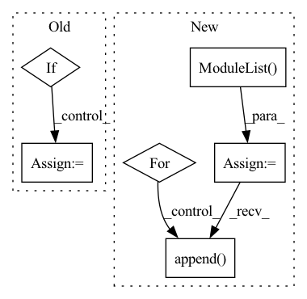

Pattern ID :1708
Before Change
self.conv2 = nn.Conv2d(32, 64, kernel_size=4, stride=2)
self.conv3 = nn.Conv2d(64, 64, kernel_size=3, stride=1)
if use_batch_norm:
self.bn1 = nn.BatchNorm2d(32)
self.bn2 = nn.BatchNorm2d(64)
self.bn3 = nn.BatchNorm2d(64)
self.bn4 = nn.BatchNorm1d(512)
self.fc = nn.Linear(self._get_linear_input_size(), 512)After Change
// convolutional layers
in_channels = [observation_shape[0]] + [f[0] for f in filters[:-1]]
self.convs = nn.ModuleList()
self.conv_bns = nn.ModuleList()
for in_channel, f in zip(in_channels, filters):
out_channel, kernel_size, stride = f
conv = nn.Conv2d(in_channel,
out_channel,
kernel_size=kernel_size,
stride=stride)
self.convs.append(conv)
if use_batch_norm:
self.conv_bns.append( nn.BatchNorm2d(out_channel))
// last dense layer
self.fc = nn.Linear(self._get_linear_input_size(), feature_size)
if use_batch_norm:In pattern: SUPERPATTERN
Frequency: 3
Non-data size: 6
Instances Fragment ID: 4364049
Project Name: takuseno/d3rlpy
Commit Name: 557b11a8d5cf75edfc0a2928399d5192d1757ddb
Time: 2020-06-16
Author: takuma.seno@gmail.com
File Name: skbrl/models/torch/heads.py
M Class Name: PixelHead
N Class Name: PixelHead
M Method Name: __init__(5)
N Method Name: __init__(3)
M Parent Class: nn.Module
N Parent Class: nn.Module
M File Name: skbrl/models/torch/heads.py
N File Name: skbrl/models/torch/heads.py
M Start Line: 11
M End Line: 22
N Start Line: 8
N End Line: 43
Before Change
self.trend_changepoints_t = torch.tensor(linear_t, requires_grad=False, dtype=torch.float)
// autoregression
if self.n_lags > 0:
self.ar = nn.Linear(n_lags, n_forecasts, bias=False)
nn.init.kaiming_normal_(self.ar.weight, mode="fan_in")
After Change
// self.ar_net = nn.Linear(n_lags, n_forecasts, bias=False)
// nn.init.kaiming_normal_(self.ar_net.weight, mode="fan_in")
// else:
self.ar_net = nn.ModuleList()
d_inputs = self.n_lags
for i in range(self.num_hidden_layers):
self.ar_net.append( nn.Linear(d_inputs, self.d_hidden, bias=True))
d_inputs = d_hidden
self.ar_net.append(nn.Linear(d_inputs, self.n_forecasts, bias=True))
for lay in self.ar_net:
nn.init.kaiming_normal_(lay.weight, mode="fan_in") Fragment ID: 4364052
Project Name: ourownstory/neural_prophet
Commit Name: 317690a96c24a1e73bff0877b8c712603c19a2ef
Time: 2020-05-25
Author: oskar.triebe@merantix.com
File Name: code/model.py
M Class Name: TimeNet
N Class Name: TimeNet
M Method Name: __init__(7)
N Method Name: __init__(5)
M Parent Class: nn.Module
N Parent Class: nn.Module
M File Name: code/model.py
N File Name: code/model.py
M Start Line: 27
M End Line: 61
N Start Line: 25
N End Line: 77
Before Change
self.num_classes = num_classes
self.num_features = self.embed_dim = embed_dim // num_features for consistency with other models
if hybrid_backbone is not None:
self.patch_embed = HybridEmbed(
hybrid_backbone,
img_size=img_size,
in_chans=in_chans,After Change
// stochastic depth decay rule
dpr = [x.item() for x in torch.linspace(0, drop_path_rate, depth)]
self.blocks = nn.ModuleList()
for i in range(depth):
block = Block(
dim=embed_dim,
num_heads=num_heads,
mlp_ratio=mlp_ratio,
qkv_bias=qkv_bias,
drop_path=dpr[i],
norm_layer=norm_layer,
act_layer=act_layer,
use_rel_pos=use_rel_pos,
rel_pos_zero_init=rel_pos_zero_init,
window_size=window_size if i in window_block_indexes else 0,
use_residual_block=i in residual_block_indexes,
input_size=(img_size // patch_size, img_size // patch_size),
)
self.blocks.append( block)
if self.pos_embed is not None:
trunc_normal_(self.pos_embed, std=0.02)
Fragment ID: 4364053
Project Name: alibaba/easycv
Commit Name: 9f01a37ad4df57b30430c41df08459025174e8fd
Time: 2022-09-15
Author: 38110862+tuofeilunhifi@users.noreply.github.com
File Name: easycv/models/backbones/vitdet.py
M Class Name: ViTDet
N Class Name: ViTDet
M Method Name: __init__(22)
N Method Name: __init__(25)
M Parent Class: nn.Module
N Parent Class: nn.Module
M File Name: easycv/models/backbones/vitdet.py
N File Name: easycv/models/backbones/vitdet.py
M Start Line: 606
M End Line: 686
N Start Line: 357
N End Line: 440
Before Change
self.conv2 = nn.Conv2d(32, 64, kernel_size=4, stride=2)
self.conv3 = nn.Conv2d(64, 64, kernel_size=3, stride=1)
if use_batch_norm:
self.bn1 = nn.BatchNorm2d(32)
self.bn2 = nn.BatchNorm2d(64)
self.bn3 = nn.BatchNorm2d(64)
self.bn4 = nn.BatchNorm1d(512)
After Change
// convolutional layers
in_channels = [observation_shape[0]] + [f[0] for f in filters[:-1]]
self.convs = nn.ModuleList()
self.conv_bns = nn.ModuleList()
for in_channel, f in zip(in_channels, filters):
out_channel, kernel_size, stride = f
conv = nn.Conv2d(in_channel,
out_channel,
kernel_size=kernel_size,
stride=stride)
self.convs.append(conv)
if use_batch_norm:
self.conv_bns.append( nn.BatchNorm2d(out_channel))
// last dense layer
self.fc = nn.Linear(self._get_linear_input_size(), feature_size)
if use_batch_norm: Fragment ID: 4364046
Project Name: takuseno/d3rlpy
Commit Name: 557b11a8d5cf75edfc0a2928399d5192d1757ddb
Time: 2020-06-16
Author: takuma.seno@gmail.com
File Name: skbrl/models/torch/heads.py
M Class Name: PixelHead
N Class Name: PixelHead
M Method Name: __init__(5)
N Method Name: __init__(3)
M Parent Class: nn.Module
N Parent Class: nn.Module
M File Name: skbrl/models/torch/heads.py
N File Name: skbrl/models/torch/heads.py
M Start Line: 11
M End Line: 22
N Start Line: 8
N End Line: 43